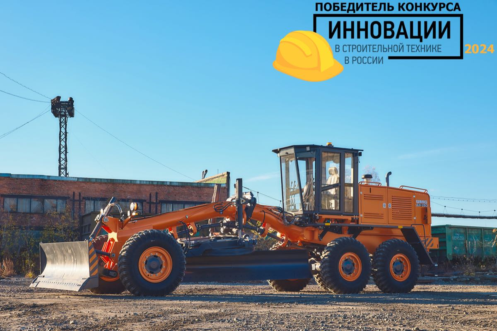

UMG
ДЗ-250 ГМП
Автогрейдеры · UMG (АО «ЭКСМАШ»)
Эксплуатационная масса
20,43т
Мощность двигателя
169кВт
Длина отвала
4100мм
Заводская гарантия, оригинальные запчасти и сервис Альфа Машинери на весь срок эксплуатации.
Назначение и область применения
Сфера применения ДЗ-250:
- Модель относится к тяжелому классу автогрейдеров.
- Автогрейдер служит для выполнения землеройно-профилировочных работ в дорожном строительстве на грунтах I, II, III, IV категорий.
- Также имеет широкое применение в железнодорожном, аэродромном, мелиоративном, ирригационном и гидротехническом строительствах.
- Основное назначение - это выполнение большого объема энергоемких земляных работ в сложных дорожных условиях.
- Виды выполняемых работ:
- - устройство в грунтовом полотне корыта под основание дороги
- - перемещение грунта в насыпь;
- - разравнивание насыпного грунта и инертных материалов;
- - планировка поверхности, в т.ч. больших территорий;
- - перемещение инертных материалов со стабилизирующими добавками при смешивании их на дороге;
- - рыхление грунта и изношенных дорожных одежд;
- - очистка дорог и территорий от снежных заносов, устройство путей.
- Условия эксплуатации в диапазоне температур от -40°С до + 40°С.
Преимущества
- Новая кабина автогрейдера соответствует требованиям безопасности FOPS, ROPS. Кабина обеспечивает полный визуальный контроль рабочей зоны и комфортные условия для оператора.
- Применение гидропривода изменения угла резания грейдерного отвала обеспечивает удобство и лёгкость управления
- Повышен уровень безотказности модернизированной КПП
- Плавающее положение грейдерного отвала расширяет технологические возможности грейдера
- Новая капотная система с дверями обеспечивает удобный доступ к точкам обслуживания.
- Расширенный перечень дополнительного рабочего оборудования
| Параметр | Грейдер ДЗ-250 с жесткой рамой и гидромеханической коробкой передач (ДЗ-250.61000-ХХХ) |
|---|---|
| Силовая установка | |
| Двигатель (модель) | ЯМЗ-236Н-5 |
| Тип | дизельный 6-ти цилиндровый V-образный, с турбонаддувом |
| Номинальная мощность нетто при оборотах кВт / об/мин | 169 / 2100 |
| Максимальный крутящий момент при оборотах, Н м / об/мин | 882 / 1200-1400 |
| Рабочий объем, л | 11,15 |
| Удельный расход топлива при номинальной мощности, г/кВт ч | 230 |
| Аккумуляторные батареи | 2 х 6СТ-190А |
| Напряжение бортовой электросети, В | 24 |
| Гидравлическая система | |
| Тип гидросистемы | с открытым центром |
| Насос гидросистемы рабочего оборудования | тандемный шестеренный насос |
| Производительность насоса при номинальных оборотах двигателя, л/мин | 126 |
| Номинальное давление в гидросистеме рабочего оборудования, МПа | 16 |
| Гидронасос рулевого управления | тандемный шестеренный насос |
| Производительность насоса при номинальных оборотах двигателя, л/мин | 84 |
| Гидронасос сервомеханизма муфты сцепления | нет |
| Производительность насоса при номинальных оборотах двигателя (л/мин) | нет |
| Рама | Жесткая рама, шарнира нет |
| Угол складывания рамы (град) | 0 |
| Минимальный радиус поворота по внешнему колесу (мм) | 18 000 |
| Рабочее оборудование, тип привода поворота отвала | Полноповоротный грейдерный отвал |
| Обозначение исполнения автогрейдера | ДЗ-250.61000-010 |
| Привод поворота грейдерного отвала | Червячный редуктор и аксиально-поршневой гидромотор 310.3.56.00.06 (объем 56см³ ) |
| Угол поворота грейдерного отвала в плане (град) | ± 360 |
| Привод механизма изменения угла резания грейдерного отвала | Механический |
| Грейдерный отвал, длина / высота (мм) | 4100 / 700 |
| Боковой вынос отвала вправо/влево (мм) | 900 / 900 |
| Диапазон изменения угла резания ножа грейдерного отвала, град. | 40 - 70 |
| Максимальный угол откоса для зачистки отвалом (град) | 90 |
| Высота подъема грейдерного отвала в транспортное положение (мм) | 350 |
| Заглубление грейдерного отвала ниже опорной поверхности (мм) | 500 |
| Бульдозерный неповоротный отвал, длина / высота с ножом (мм) | 3220 / 950 |
| Масса комплекта отвала (кг) | 1426 |
| Заглубление отвала ниже опорной поверхности (мм) | 100 |
| Параметры хода | |
| Колесная формула | 1 х 3 х 3 |
| Муфта сцепления | нет |
| Коробка перемены передач | Гидромеханическая, с электрогидравлическим переключением, с приводом на все мосты |
| Число передач вперед / назад | 6 / 3 |
| Максимальная скорость передвижения вперед/назад (км/ч) | 40 / 24,5 |
| Передний мост | Управляемый, приводной, с балансирныи креплением, с механическим (карданным) приводом от ГМП |
| Угол наклона колес переднего моста (град) | нет |
| Угол качания балки переднего моста (град) | ± 16 |
| Дорожный просвет под передним мостом (мм) | 520 |
| Задние мосты | 2 приводных моста, без дифференциалов |
| Стояночный тормоз | Дисковый, сухого типа |
| Рабочие тормоза | Двухконтурная пневматическая тормозная система. Дисковые колёсные тормоза в бортовых редукторах среднего и заднего моста |
| Максимальное тяговое усилие (кН) | 155 |
| Стандартные шины, размерность | 20,5-25 |
| Заправочные емкости | |
| Топливный бак (л) | 500 |
| Гидравлическая система, включая гидробак (л) | 150 |
| Гидравлический бак (л) | 100 |
| Эксплуатационная масса | Полноповоротный грейдерный отвал |
| Эксплуатационная масса с неповоротным бульдозерным отвалом - стандартное исполнение (т) | 20,43 |
| Эксплуатационная масса без дополнительного оборудования (т) | 19,01 |
| Эксплуатационная масса с неповоротным бульдозерным отвалом и задним рыхлителем (т) | 21,88 |
| Габаритные размеры | |
| Общая длина без дополнительного оборудования (мм) | 9700 |
| Общая длина с неповоротным бульдозерным отвалом (мм) | 10690 |
| Общая длина с неповоротным бульдозерным отвалом и задним рыхлителем (мм) | 11130 |
| Ширина при транспортировке (мм) | 3220 |
| Общая высота по кабине (мм) | 4000 |
| Общая высота по кабине с маяком (мм) | 4260 |
| Колесная база грейдера / балансирной тележки (мм) | 6000 / 1620 |
| Ширина колеи, передних / задних колес (мм) | 2629 / 2507 |
| Минимальный дорожный просвет (мм) | 350 |
| Сервисные и гарантийные интервалы | |
| Минимальный межсервисный интервал (моточас) | 250 |
| Гарантийный срок (мес/моточас) | 12 / 1500 |
| Стандартное оборудование | |
| Кабина с защитой FOPS & ROPS | да |
| Две двери для входа в кабину | да |
| Стеклоочистители на переднем и заднем окнах | да |
| Рулевая колонка с регулировкой по углу наклона | да |
| Сиденье машиниста с механической подвеской, ремнем безопасности | да |
| Проблесковый маяк на крыше кабины | да |
| Держатель номерного знака с подсветкой | да |
| Отопитель кабины | да |
| Фонари рабочего освещения | да |
| Ходовые осветительные приборы | да |
| Крылья задних колёс в виде площадок для обслуживания и входа в кабину | да |
| Отсек для хранения инструмента | да |
| Предпусковой подогреватель двигателя ПЖД-30 | да |
| Передний бульдозерный отвал | да |
| Капотная система с дверями в местах обслуживания | да |
| Оборудование по заказу | |
| Зеркала заднего вида с подогревом | опция |
| Кондиционер накрышный | опция |
| Плавающее положение грейдерного отвала | да |
| Аудиоподготовка / стерео FM-mp3-USB | опция |
| Сиденье на пневмоподвеске с подогревом | опция |
| Автоматическая система нивелирования 2D и 3D | опция |
| Путепрокладочное оборудование | опция |
| Масса комплекта (кг) | 1900 |
| Длина / высота (мм) | 3400 / 950 |
| Угол поворота крыльев отвала в плане (град) | ± 25 |
| Опускание отвала ниже опорной поверхности (мм) | 200 |
| Рыхлитель заднего расположения | опция |
| Масса комплекта (кг) | 1450 |
| Число зубьев | 5 |
| Рыхлитель переднего расположения | опция |
| Масса комплекта (кг) | 1450 |
| Переднее снегоочистительное оборудование | опция |
| Масса комплекта (кг) | 1213 |
| Тип оборудования | плужный |
| Ширина захвата / высота отвала (мм) | 3200 / 1650 |
| ОБГ - отвал боковой грейдерный | опция |
| Масса, включая детали доработки тяговой рамы (кг) | 1780 |
| Длина режущей кромки отвала (мм) | 3200 |
| Ширина захвата (мм) при угле захвата 45 / 57 град | 2200 / 2600 |
| Высота отвала (мм) | 650 |
| Бульдозерный поворотный отвал | опция |
| Масса комплекта (кг) | 1674 |
Данные приведены по официальной документации производителя (UMG). Завод вправе менять параметры без уведомления.
Что передаём с машиной
- Паспорт самоходной машины (ПСМ) и сертификат соответствия;
- Руководство по эксплуатации и сервисная книжка;
- Каталог запасных частей под ваше исполнение;
- Договор поставки и гарантийные обязательства завода.
Коммерческое предложение с ценой, сроком поставки и комплектацией высылаем в ответ на заявку — обычно в течение рабочего дня.
Сравните
Похожие модели


Запрос цены
ДЗ-250 ГМП — узнать стоимость
Пришлём коммерческое предложение с ценой, сроком поставки, комплектацией и вариантом лизинга.
Телефон
+7 917 756-26-06Почта
alfa-mash@bk.ru